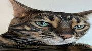
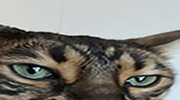
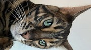
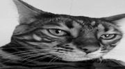

Picture This! Lab
Original Image
Cropped Image
Rotated Image
Black & White Image

This page was tested in Google Chrome and Mozilla Firefox.
Back To Homepage
This page was tested in Google Chrome and Mozilla Firefox.
Back To Homepage